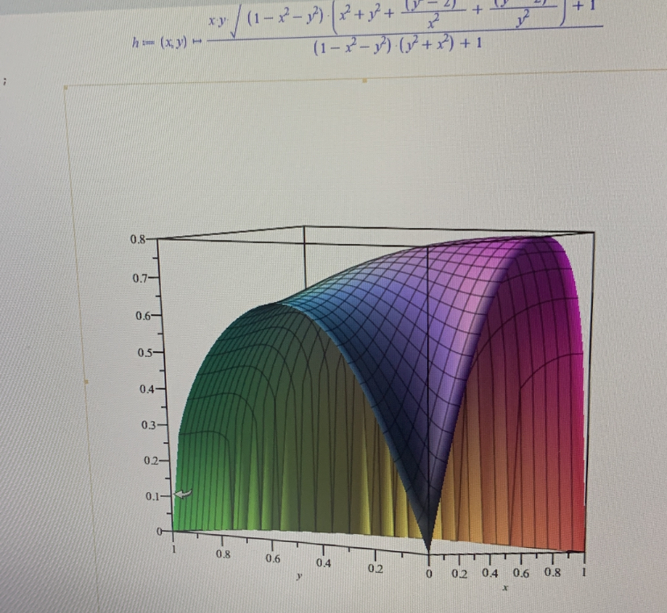

My Masters dissertation (Under the supervision of Carlos Tomei).
Disclaimer: There is nothing original here. I made these notes for my own understanding of the subjects. Feel free to poit out any eventual errors.
Introduction to Toda lattices at IMPA.
Random Matrices, Graphs and a combinatorial proof of Wigner's Semi-Circle Law at PUC-Rio.
